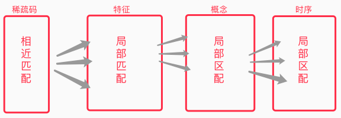
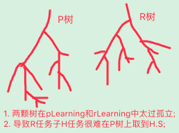

AI系列之《2022.01-02：相近匹配、想像力与双树融合》

来源：HELIX_THEORY/手稿/assets/570_相近匹配模型分析.png

来源：HELIX_THEORY/手稿/assets/574_hSolution取不到解决方案的原因示图.png
来源：Note25.md
2022 年初，重点落在危险地带训练、deltaTime from-to 表征、相近匹配、想像力，以及 pFos/rFos 双树融合。系统开始面对一个现实问题：经验不会以完全相同的形式再次出现，智能必须能在“相近但不相同”的场景里迁移。
相近匹配试图让识别和决策不再依赖硬匹配；想像力则把未发生的路径纳入候选，使系统能够预演而非只回放。双树融合进一步把指向结果的 P 经验与更偏反思/修正的 R 经验组织起来，为后续的 Canset 和解决方案竞争打基础。
这一阶段的训练围绕十三测、十四测、十五测展开，本质上是在逼迫系统承认：环境是连续的，经验是近似的，决策必须在模糊性中完成。